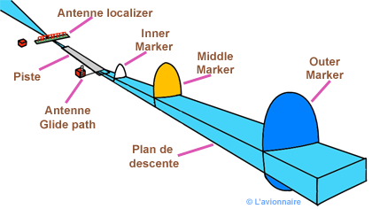
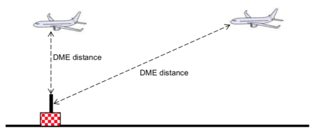

SELEX Model 2100
Capture-Effect Localizer Dual System
| Fréquence (MHz): | 110,3 |
| Indicatif : | ADA |
| Mise en service : | 2009 |
Instructions et Fiche Technique LOCALIZER
| Document | Réference | Doc Pdf | Status |
|---|---|---|---|
| Fiche technique LOC | AGA.PS08.E.125/00 | imprimé | Actualisée |
| Mesure de la fréquence COURSE Loc | AGA.PS08.I.130/00 | imprimé | Actualisée |
| Mesure de la fréquence CLEARANCE du Loc | AGA.PS08.I.131/00 | imprimé | Actualisée |
| Mesure des fréquences 90Hz, 150 Hz, et 1020Hz Loc | AGA.PS08.I.132/00 | imprimé | Actualisée |
| Equilibrage des taux de modulation du localiser | AGA.PS08.I.133/00 | imprimé | Actualisée |
SELEX Model 2110
Capture Effect Glideslope Dual System
| Fréquence (MHz): | 335 |
| Indicatif : | sans |
| Mise en service : | 2009 |
Instructions et Fiche Technique GP
| Document | Réference | Doc Pdf | Status |
|---|---|---|---|
| Fiche technique GP | AGA.PS08.E.125/00 | imprimé | Actualisée |
| Mesure de la fréquence Course GP | AGA.PS08.I.120 | imprimé | Actualisée |
| Mesure de la fréquence CLEARANCE du GP | AGA.PS08.I.120 | imprimé | Actualisée |
| Mesure des fréquences 90Hz, 150 Hz, et 1020Hz GP | AGA.PS08.I.120 | imprimé | Actualisée |
| Mise en phase CSB/SBO | AGA.PS08.I.120 | imprimé | Actualisée |

SELEX Model 1118A
Dual Low Power DME
| Fréquence/Canal : | 40X |
| Indicatif : | ADA |
| Mise en service : | 2009 |
Instructions et Fiche Technique DME ATT
| Document | Réference | Doc Pdf | Status |
|---|---|---|---|
| Fiche technique DME ATT | AGA.PS08.E.125/00 | imprimé | Actualisée |
| Mesure de la fréquence de l’émetteur | AGA.PS08.I.110 | imprimé | Actualisée |
| Mesure de la fréquence du récepteur | AGA.PS08.I.111 | imprimé | Actualisée |
| Mesure de la fréquence de l’interrogateur DME | AGA.PS08.I.112 | imprimé | Actualisée |
| Contrôle de la forme des impulsions Transmitter | AGA.PS08.I.113 | imprimé | Actualisée |